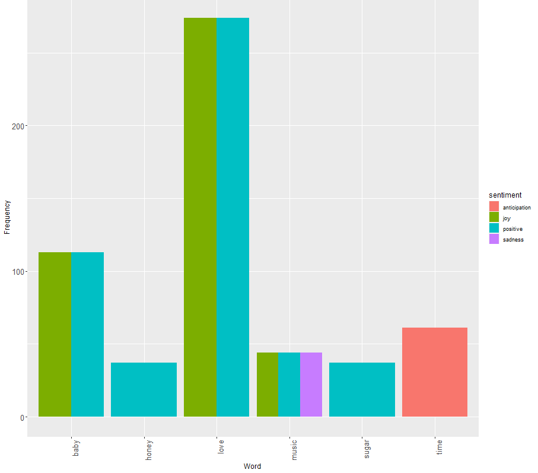
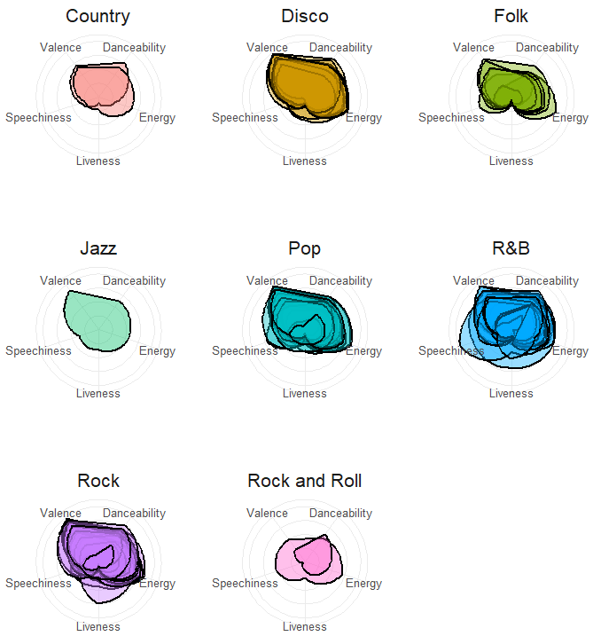
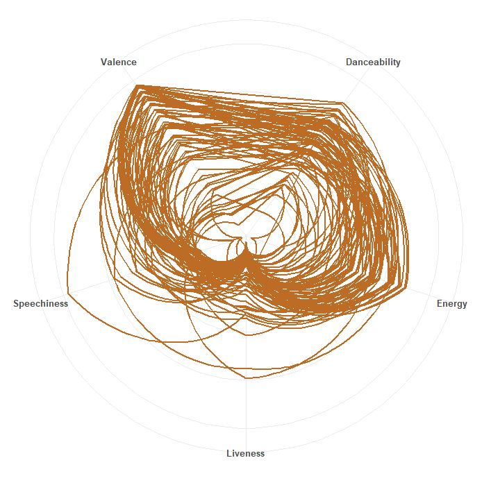
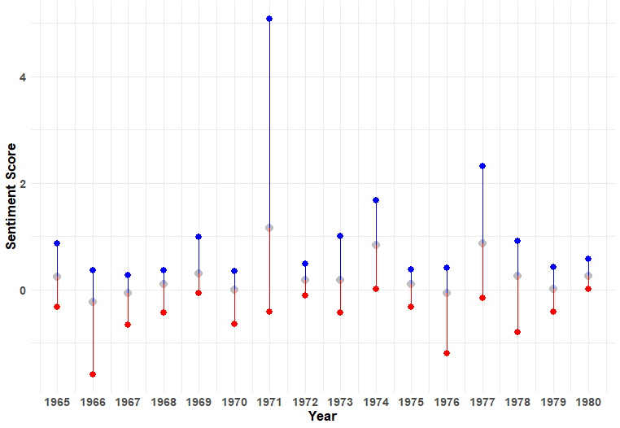

Welcome to Generation X, a time when individuals born between the mid-1960s and early 1980s witnessed and influenced significant shifts in society. From the rise of punk rock to the fall of the Berlin Wall, from the advent of personal computing to the explosion of hip-hop culture, these years were marked by transformative social, cultural, and technological developments that shaped the fabric of an era.
During the Generation X era, these were the most popular music genres...
| Genre | Count |
|---|---|
| Country | 2 |
| Disco | 9 |
| Folk | 7 |
| Jazz | 1 |
| Pop | 19 |
| R&B | 17 |
| Rock | 23 |
| Rock and Roll | 2 |
From these top words and their associated emotions, we can glean insights into prevalent themes and sentiments that reverberated throughout Generation X, reflecting the cultural, social, and emotional landscape of that era. Notably, the top two emotions, Joy and Positivity, wielded influence over significant events during that time, including the rise of alternative music, the fall of the Iron Curtain, the emergence of the internet age, and the end of the Cold War.
Each generation exhibits a diverse array of music genres, each with distinct characteristics such as valence, danceability, speechiness, energy, and liveness. These traits offer insight into the unique sound and feel of the music that defined each era
The Generation X era, epitomized by its music genres, exhibits a consistent trend characterized by high valence, danceability, and energy, with less emphasis on speechiness and liveness.
Analyzing the sentiment scores of Generation X throughout the years offers insights into emotional trends, focusing on their minimum, maximum, and average ranges. For example, the sentiment score peaked in 1971, coinciding with various cultural movements and the emergence of new artistic expressions, such as the release of Marvin Gaye's album "What's Going On," which addressed pressing social issues with empathy and depth. Conversely, the lowest sentiment score was recorded in 1966, a period marked by social unrest and geopolitical tensions, such as the escalation of the Vietnam War with increased American troop deployments, leading to widespread dissent and disillusionment among many in Generation X.
Within the Generation X Generation, the top three songs of the era with the highest positive sentiment scores are...
| Song | Artist | Year Released | Sentiment Score |
|---|---|---|---|
| Joy to the World | Three Dog Night | 1971 | 5.07 |
| Best of My Love | The Emotions | 1977 | 2.31 |
| Evergreen | Barbra Streisand | 1977 | 1.68 |
Within the Generation X Generation, the top three songs of the era with lowest negative sentiment scores are...
| Song | Artist | Year Released | Sentiment Score |
|---|---|---|---|
| 96 Tears | ? and the Mysterians | 1966 | -1.59 |
| Disco Lady | Johnnie Taylor | 1976 | -1.20 |
| Night Fever | Bee Gees | 1978 | -0.80 |